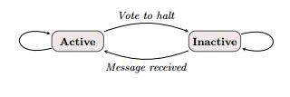
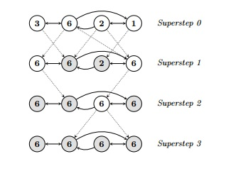

Vertex Model
- The image shows the vertex model, where a vertex in active state executes a user-defined function and on completion, votes to halt.
- The vertex then goes into the inactive state where messages are then passed onto the neighbouring vertices regarding curent vertex state.
- This vertex state model is the basis of pregel implementations.
Maximum Value Example
- The image shows a simple algorithm that passes the maximum vertex value that has been seen and this is propagated until no more messages are passed.
- The figure illustrates these concepts using a simple example: given a strongly connected graph where each vertex contains a value, it propagates the largest value to every vertex.
- In each superstep, any vertex that has learned a larger value from its messages sends it to all its neighbors. When no further vertices change in a superstep, the algorithm terminates


Implementations
The Pregel model relies on a robust implementation of vertex-to-vertex message passing. There are several approaches to such an implementatiion:
- OpenMPI: Using message passing interface implementation will allow for fast and e�ffective communication between processes in an MPI-cluster. However, such MPI
often involves large overheads in message type de�nitions and MPI calls are very verbose.
- Remote Calls and References: Data and command messages can be implemented through remote calls. Each remote call yields a future that can be acted upon.
In our implementation, each process maintains two separate remote references, an incoming message queue and an outgoing control queue.
C++ API
Writing a Pregel program involves subclassing the predefined Vertex class. Its template arguments define three value types, associated with vertices, edges, and messages.
Each vertex has an associated value of the specified type.
The user overrides the virtual Compute() method, which will be executed at each active vertex in every superstep. Predefined Vertex methods allow Compute() to query information
about the current vertex and its edges, and to send messages to other vertices. Compute() can inspect the value associated with its vertex via GetValue() or modify it via MutableValue().
It can inspect and modify the values of out-edges using methods supplied by the out-edge iterator. These state updates are visible immediately. Since their visibility is confined to
the modified vertex, there are no data races on concurrent value access from different vertices.
The values associated with the vertex and its edges are the only per-vertex state that persists across supersteps. Limiting the graph state managed by the framework to a single
value per vertex or edge simplifies the main computation cycle, graph distribution, and failure recovery.